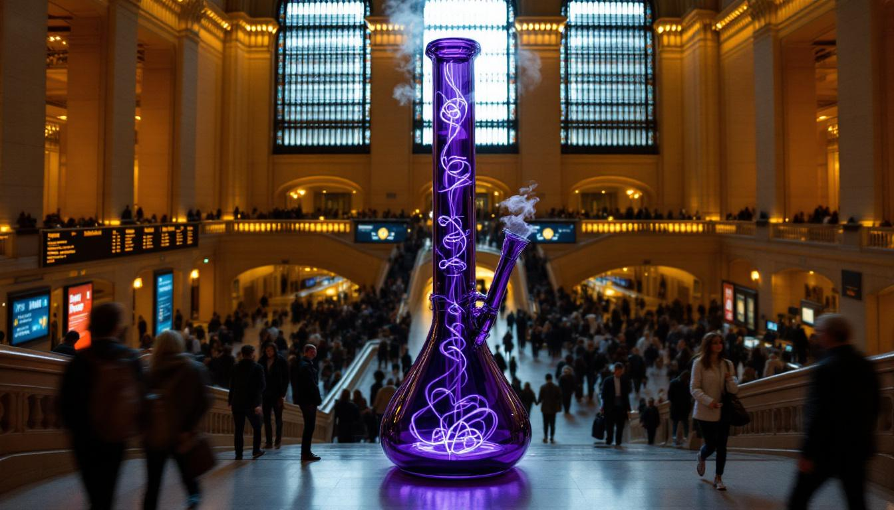
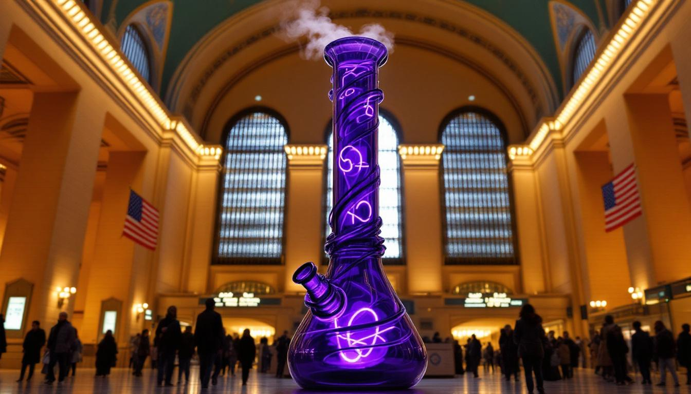
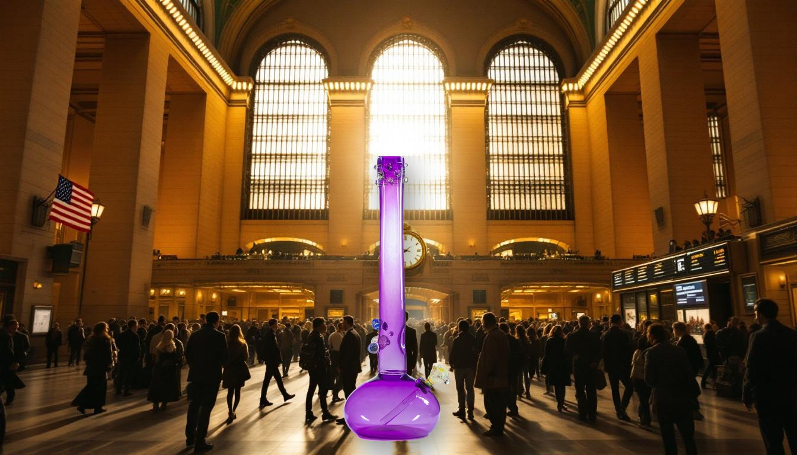

Arrival.
The Setup
Jerome Baker arrives in New York the way anyone should — through the grandest room in the city. He emerges from a Town Car on 42nd Street. A handler escorts him inside. The crowd parts. Nobody knows what to say. Jerome doesn't explain himself.
Shots
- Wide: Town Car door opens — Jerome rises into frame against the facade
- Ground-up angle: Jerome moving through the main concourse, commuters mid-stride
- Reaction cam: tourists, cops, kids, businesspeople
- Close: fog machine activating — smoke rising through the cathedral light
- Jerome positioned under the famous clock. He belongs there.
Viral Hook
Nobody is ready for a five-and-a-half-foot glowing purple bong moving through Grand Central at rush hour. And yet here he is.


